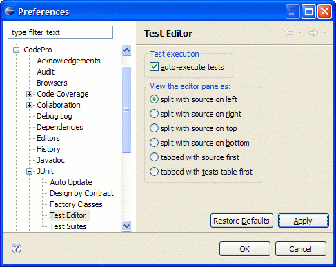
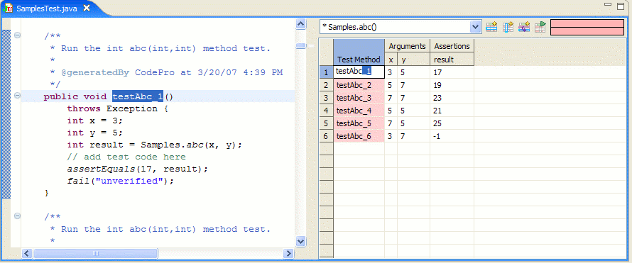

Test Editor Preferences
Test execution preference
Selected by default. When selected, the tests are executed every time a test class is opened or updated.
View the editor pane preference
The View editor preference controls the position of the source pane relative to
the test editor pane. By default, it is set to "split with source on left". Additional options are
provided to show the source pane and test editor pane side by side or one above
the other. To change how the source and test editor are displayed, select Window > Preferences > CodePro > JUnit > Test Editor. Select the option you want and click OK.
Note: You have to re-open the file to be able to see the change.
Sample split view with source on left - The Source pane and the Test Editor pane are visible at the same time.

Sample tabbed view